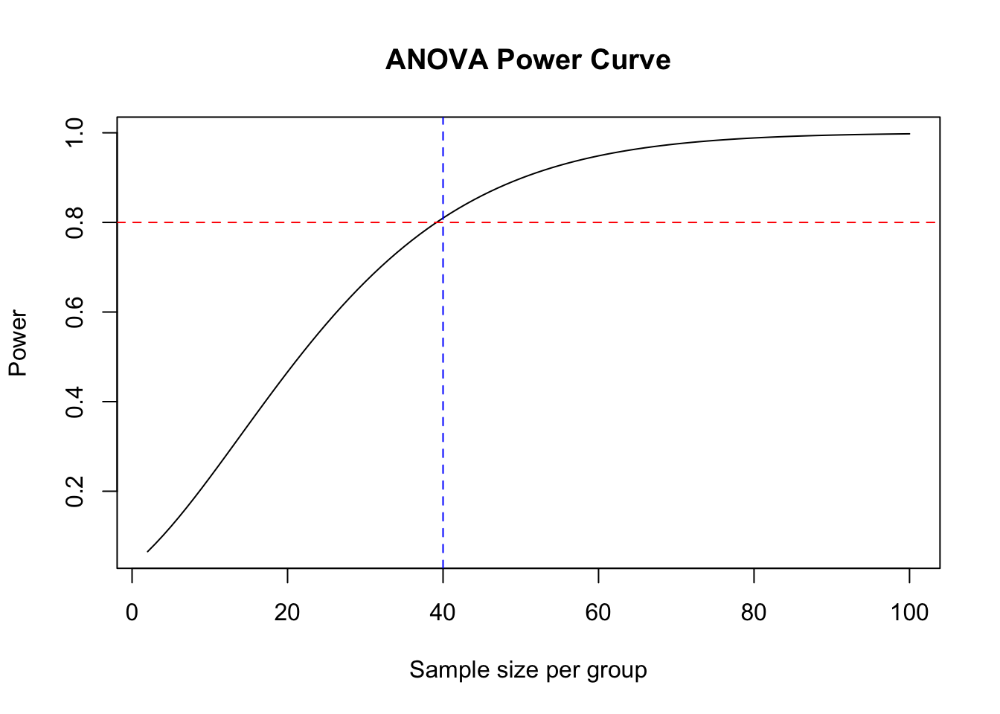
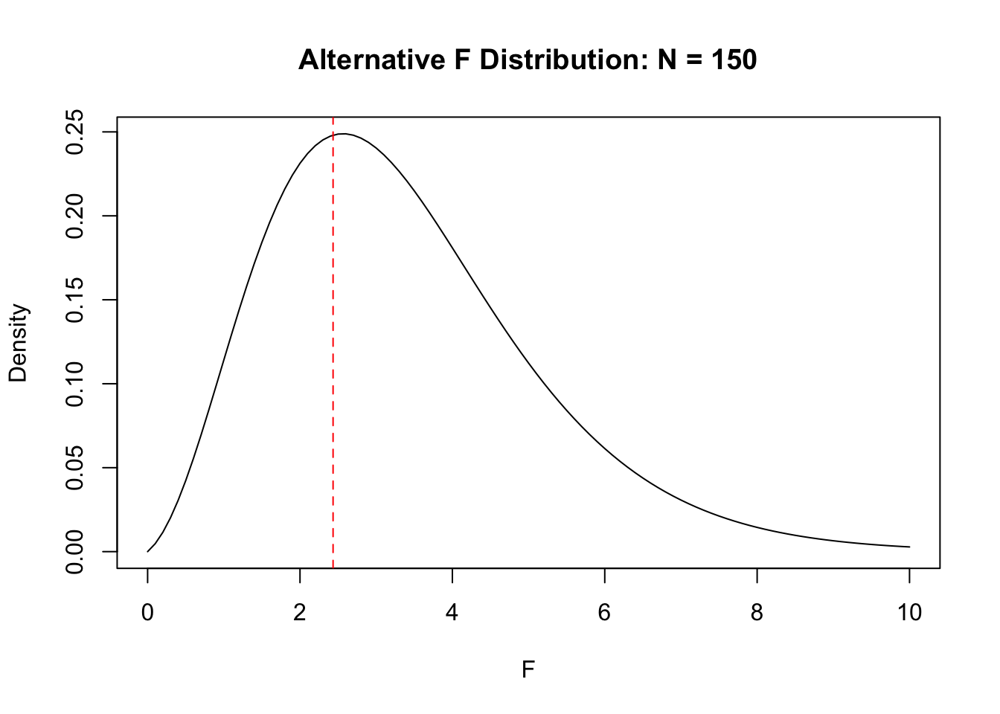
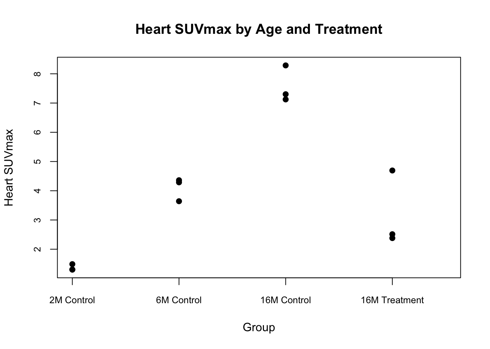

Homework 2: k Sample Inference
1 Question 1
1.1 Part a
1.1.1 1
1.1.2 2
Code
[1] 0.294At least one pairwise comparison provided statistically discernible support for a non-zero mean difference in 294 of the 1,000 simulations (p < 0.05). These are Type I errors, giving an estimated family-wise error rate of 29.4%.
1.1.3 3
Code
[1] 0.053After Tukey’s HSD adjustment, at least one pairwise comparison provided statistically discernible support for a non-zero mean difference in 53 of the 1,000 simulations (adjusted p < 0.05). Since all population means were zero, these are Type I errors, and the estimated family-wise error rate is 5.3%.
1.2 Part b
Code
[1] 0.047After BH adjustment, at least one pairwise comparison provided statistically discernible support for a non-zero mean difference in 47 of the 1,000 simulations, giving an estimated family-wise error rate of 4.7%. This was much lower than the unadjusted rate of 29.4% and close to Tukey’s rate of 5.3%.
BH targets the false discovery rate (FDR), whereas Tukey’s HSD controls the family-wise error rate (FWER).
2 Question 2
2.1 Part a
Code
Balanced one-way analysis of variance power calculation
k = 5
n = 39.1534
f = 0.25
sig.level = 0.05
power = 0.8
NOTE: n is number in each groupCode
# Power curve
n <- 2:100
power <- sapply(n, function(x) {
pwr::pwr.anova.test(
k = 5, n = x, f = 0.25, sig.level = 0.05
)$power
})
plot(n, power, type = "l",
xlab = "Sample size per group",
ylab = "Power",
main = "ANOVA Power Curve")
abline(h = 0.80, col = "red", lty = 2)
abline(v = 40, col = "blue", lty = 2)
The required sample size is roughly 40 participants per group and 200 in total. The graph shows that 40 participants per group achieves slightly more than 80% power.
Since every group in the original groups had more than 40 participants, the study is powered for the overall ANOVA under the assumed moderate effect size. This calculation assumes equal group sizes, so it does not provide the exact power of the original unequal-sized design.
2.2 Part b
[1] 9.375[1] 0.6675964Code

With 30 participants per group, the non-centrality parameter is 9.375 and the power is approximately 66.8%. Therefore, N = 150 is insufficient to achieve the desired 80% power.
2.3 Part c
Code
[1] 0.07866837Code
[1] 293An overall ANOVA can detect differences among groups having different means. However, detecting the smaller difference between stages 1 and 2 is harder, especially after Tukey’s adjustment for multiple comparisons.
With 40 participants per group, the power is only about 7.9%. Using the pooled variance of 0.7152, approximately 293 participants per group are needed to achieve 80% power for this comparison.
2.4 Part d
Code
library(Superpower)
for (n in c(40, 80)) {
design <- ANOVA_design(
design = "5b",
n = n,
mu = c(2.92, 3.11, 3.36, 4.04, 4.35),
sd = sqrt(0.80),
plot = FALSE
)
result <- ANOVA_power(
design,
nsims = 1000,
seed = 354,
emm = TRUE,
emm_p_adjust = "tukey",
verbose = FALSE
)
print(paste("Sample size per group:", n))
print(result$main_result)
print(result$emm_results)
}[1] "Sample size per group: 40"
power effect_size
anova_a 100 0.2875741
contrast power cohen_f
p_1 a_a1 - a_a2 3.2 0.07851998
p_2 a_a1 - a_a3 29.8 0.16043752
p_3 a_a1 - a_a4 99.7 0.40079656
p_4 a_a1 - a_a5 100.0 0.51421433
p_5 a_a2 - a_a3 6.4 0.09965935
p_6 a_a2 - a_a4 96.8 0.33441403
p_7 a_a2 - a_a5 99.9 0.44783180
p_8 a_a3 - a_a4 73.3 0.24120424
p_9 a_a3 - a_a5 98.1 0.35462200
p_10 a_a4 - a_a5 11.9 0.11742044
[1] "Sample size per group: 80"
power effect_size
anova_a 100 0.2797892
contrast power cohen_f
p_1 a_a1 - a_a2 8.2 0.07492609
p_2 a_a1 - a_a3 67.3 0.15861698
p_3 a_a1 - a_a4 100.0 0.39912272
p_4 a_a1 - a_a5 100.0 0.51008441
p_5 a_a2 - a_a3 18.1 0.09050315
p_6 a_a2 - a_a4 100.0 0.32897230
p_7 a_a2 - a_a5 100.0 0.43993399
p_8 a_a3 - a_a4 98.4 0.24067913
p_9 a_a3 - a_a5 100.0 0.35164081
p_10 a_a4 - a_a5 30.1 0.11153257Doubling the sample size from 40 to 80 per group increases power, but is still insufficient to achieve 80% power for every pairwise comparison. In specific, the small difference between stages 0 and 1 (3.11 − 2.92 = 0.19) remains difficult to detect.
3 Question 3
3.1 Part a
Let \(\mu_{2C}\), \(\mu_{6C}\), \(\mu_{16C}\), and \(\mu_{16T}\) denote the population mean SUVmax values for the 2-month control, 6-month control, 16-month control, and 16-month treatment groups, respectively.
\[ H_0: \mu_{2C} = \mu_{6C} = \mu_{16C} = \mu_{16T} \]
\[ H_a: \text{At least one population mean differs.} \]
3.2 Part b
Code
dat3 <- data.frame(
SUVmax = c(
1.48969, 1.30168, 1.30620,
4.36000, 4.28807, 3.64184,
7.30182, 7.12416, 8.28764,
4.69304, 2.51326, 2.38019
),
group = factor(
rep(c("2M Control", "6M Control",
"16M Control", "16M Treatment"), each = 3),
levels = c("2M Control", "6M Control",
"16M Control", "16M Treatment")
)
)
# Means and standard deviations
aggregate(SUVmax ~ group, data = dat3, FUN = mean) group SUVmax
1 2M Control 1.365857
2 6M Control 4.096637
3 16M Control 7.571207
4 16M Treatment 3.195497 group SUVmax
1 2M Control 0.1072666
2 6M Control 0.3955041
3 16M Control 0.6267761
4 16M Treatment 1.2986162Code

Among the control groups, mean heart SUVmax increased with age (approximately 1.37, 4.10, and 7.57 for 2, 6, and 16 months, respectively). The 16-month treatment group had a lower mean (approximately 3.20) than the 16-month control group, placing it between the two younger control groups.
3.3 Part c
One-way analysis of means (not assuming equal variances)
data: SUVmax and group
F = 98.464, num df = 3.0000, denom df = 3.5496, p-value = 0.0006851SUVmax is quantitative. The sample standard deviations differ substantially across groups, so I used Welch’s ANOVA because it does not assume equal population variances. The rats are not connected in certain ways so I assume independence. The observations per group are three, which is low, so the results should be interpreted cautiously.
Welch’s ANOVA gives \(F = 98.46\), with 3 and 3.55 degrees of freedom (p = 6.85^{-4}). Since p < 0.05, we reject the null hypothesis. The data provide statistically discernible support that at least one population mean heart SUVmax differs among the four groups.
3.4 Part d
# A tibble: 6 × 8
.y. group1 group2 estimate conf.low conf.high p.adj p.adj.signif
* <chr> <chr> <chr> <dbl> <dbl> <dbl> <dbl> <chr>
1 SUVmax 2M Control 6M Control 2.73 1.31 4.15 0.0119 *
2 SUVmax 2M Control 16M Contr… 6.21 3.81 8.60 0.00720 **
3 SUVmax 2M Control 16M Treat… 1.83 -3.30 6.96 0.308 ns
4 SUVmax 6M Control 16M Contr… 3.47 1.56 5.39 0.00801 **
5 SUVmax 6M Control 16M Treat… -0.901 -5.47 3.67 0.698 ns
6 SUVmax 16M Control 16M Treat… -4.38 -8.51 -0.244 0.0431 * Games–Howell comparisons showed statistically discernible increases in mean heart SUVmax across the control groups: 2 versus 6 months (adjusted p = 0.0119), 2 versus 16 months (p = 0.0072), and 6 versus 16 months (p = 0.00801). The 16-month treatment group had a lower mean than the 16-month control group (estimated difference = −4.38, adjusted p = 0.0431), supporting a reduction associated with low-dose nicotine.
The treatment group did not differ significantly from the 2-month or 6-month control groups (adjusted p = 0.308 and 0.698, respectively), but these results do not establish equivalence to younger mice.
3.5 Part e
The results support the hypothesis that SUVmax increases with age and is reduced by low-dose nicotine in older mice. All three control groups differed significantly, with higher mean SUVmax at older ages. Although the treatment group did not differ significantly from the younger controls, this does not establish that treatment restored SUVmax to younger levels.